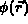
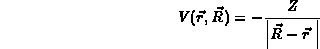
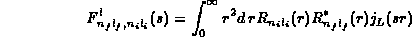
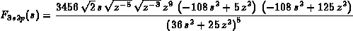

Department of Physics, University of Bergen, Bergen, Norway
The evaluation of collisional cross sections in Born approximation has been an important method before the more exact approaches were made possible by the development of computational techniques. However, even now when such more exact methods are feasible, the Born approximation is still useful in many connections, e.g. as a quick estimate in over all analysis or for extraction of important physical features etc. In particular, when the involved states are complex, as e.g. in the case of Rydberg atoms (the states are close to hydrogenic states for very large quantum numbers), the more exact methods lead to great complexity of numerical codes and the possibility to analyze the problems analytically in Born approximation can be very useful.
The reported project has as an aim to develop methods for easy evaluation of various Born approximation results. Originally we have been using Mathematica to evaluate analytically the relevant matrix elements. The results are then manually modifiead and copied into a FORTRAN code, used for subsequent numerical evaluation. At present we are working on implementation of the symbolic-numeric procedures for this problem, using REDUCE for development of FORTRAN code, which will construct the matrix elements by performing the needed specialized symbolic manipulations in the same run as the final numerical results.
The mathematical structure of the problem is as follows. The differential cross sections to be evaluated are
where the functions describing both the projectile and the inner structure of the target are now
The atomic motion is described by the plane waves, while the atomic states are

. The potential is
The wave functions contain the spherical harmonics
and the expressions for the angular integrals are well known. One needs thus only to evaluate

where the are the radial functions and iis the spherical Bessel function. The variable s is the momentum transfer
For hydrogen-like the analytic evaluation is the subject of this work.
As an example, below follows one of the functions, evaluated and formatted by the Mathematica routine.

here z is the atomic number of the target atom and s is the momentum transfer defined above.